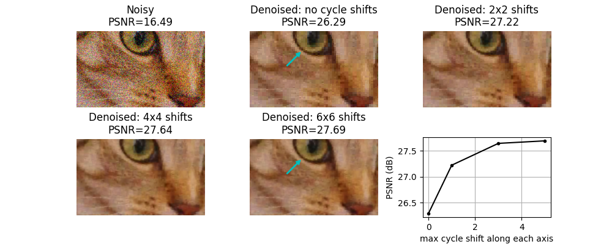

Source
SourceNote
Click here to download the full example code or to run this example in your browser via Binder
Shift-invariant wavelet denoising¶
The discrete wavelet transform is not shift-invariant. Shift invariance can be achieved through an undecimated wavelet transform (also called stationary wavelet transform), at cost of increased redundancy (i.e. more wavelet coefficients than input image pixels). An alternative way to approximate shift-invariance in the context of image denoising with the discrete wavelet transform is to use the technique known as “cycle spinning”. This involves averaging the results of the following 3-step procedure for multiple spatial shifts, n:
(circularly) shift the signal by an amount, n
apply denoising
apply the inverse shift
For 2D image denoising, we demonstrate here that such cycle-spinning can provide a substantial increase in quality, with much of the gain being achieved simply by averaging shifts of only n=0 and n=1 on each axis.
Out:
Clipping input data to the valid range for imshow with RGB data ([0..1] for floats or [0..255] for integers).
Clipping input data to the valid range for imshow with RGB data ([0..1] for floats or [0..255] for integers).
Clipping input data to the valid range for imshow with RGB data ([0..1] for floats or [0..255] for integers).
Clipping input data to the valid range for imshow with RGB data ([0..1] for floats or [0..255] for integers).
import matplotlib.pyplot as plt
from skimage.restoration import denoise_wavelet, cycle_spin
from skimage import data, img_as_float
from skimage.util import random_noise
from skimage.metrics import peak_signal_noise_ratio
original = img_as_float(data.chelsea()[100:250, 50:300])
sigma = 0.155
noisy = random_noise(original, var=sigma**2)
fig, ax = plt.subplots(nrows=2, ncols=3, figsize=(10, 4),
sharex=False, sharey=False)
ax = ax.ravel()
psnr_noisy = peak_signal_noise_ratio(original, noisy)
ax[0].imshow(noisy)
ax[0].axis('off')
ax[0].set_title('Noisy\nPSNR={:0.4g}'.format(psnr_noisy))
# Repeat denosing with different amounts of cycle spinning. e.g.
# max_shift = 0 -> no cycle spinning
# max_shift = 1 -> shifts of (0, 1) along each axis
# max_shift = 3 -> shifts of (0, 1, 2, 3) along each axis
# etc...
denoise_kwargs = dict(multichannel=True, convert2ycbcr=True, wavelet='db1',
rescale_sigma=True)
all_psnr = []
max_shifts = [0, 1, 3, 5]
for n, s in enumerate(max_shifts):
im_bayescs = cycle_spin(noisy, func=denoise_wavelet, max_shifts=s,
func_kw=denoise_kwargs, multichannel=True)
ax[n+1].imshow(im_bayescs)
ax[n+1].axis('off')
psnr = peak_signal_noise_ratio(original, im_bayescs)
if s == 0:
ax[n+1].set_title(
"Denoised: no cycle shifts\nPSNR={:0.4g}".format(psnr))
else:
ax[n+1].set_title(
"Denoised: {0}x{0} shifts\nPSNR={1:0.4g}".format(s+1, psnr))
all_psnr.append(psnr)
# plot PSNR as a function of the degree of cycle shifting
ax[5].plot(max_shifts, all_psnr, 'k.-')
ax[5].set_ylabel('PSNR (dB)')
ax[5].set_xlabel('max cycle shift along each axis')
ax[5].grid(True)
plt.subplots_adjust(wspace=0.35, hspace=0.35)
# Annotate with a cyan arrow on the 6x6 case vs. no cycle shift case to
# illustrate a region with reduced block-like artifact with cycle shifting
arrowprops = dict(arrowstyle="simple,tail_width=0.1,head_width=0.5",
connectionstyle="arc3",
color='c')
for i in [1, 4]:
ax[i].annotate("", xy=(101, 39), xycoords='data',
xytext=(70, 70), textcoords='data',
arrowprops=arrowprops)
plt.show()
Total running time of the script: ( 0 minutes 0.810 seconds)